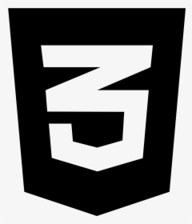
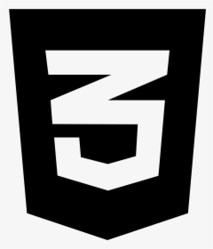

Hallo you beutifull people and the internet. My name is Toms Kalninns, I am a developing Web developer and welcome to my portfolio web page.
This page is one of my designs styled with inspiraton fom the movie Tron if you havnt watchedd it i recomend you watch it ;).
In this web page i focuse on minimalistic design with focus on functionlity and accecaility also making sure the webpage is responsive on a mobie platorm.
 
